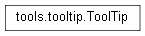
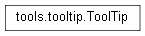

ToolTip¶
Allows for the easy creation of tool tips that are displayed below buttons. Requires a widget and overlays a simple tool tip once hovered over by the mouse. Created with py:meth:createToolTip

Allows for the easy creation of tool tips that are displayed below buttons. Requires a widget and overlays a simple tool tip once hovered over by the mouse. Created with py:meth:createToolTip
